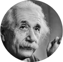

인생에 필요한 주옥같은 조언
-
길을 아는 것과 그 길을 걷는 것은 분명히 다르다.
모피어스, 영화 매트릭스 -
처음에는 우리가 습관을 만들지만 그 다음에는 습관이 우리를 만든다.
존 드라이든 -
 모든 사람은 천재다. 하지만 물고기들을 나무타기 실력으로 평가한다면 물고기는 평생 자신이 형편없다고 믿으며 살아갈 것이다.
아인슈타인 -
재능이 부족하다고 걱정하지 마라. 인생에서는 진로가 재능보다 중요하다.
양광모, 비상 -

하고 싶은 일을 하기 위해 해야 하는 일을 하지 않으면 안된다.
윤운중, 도슨트 -

말을 많이 한다는 것과 잘한다는 것은 별개이다.
소포클레스 -
꽃을 보고 좋아하면 꽃이 기분 좋습니까? 내가 기분이 좋습니까? 상대를 좋아하면 내가 좋습니다. 행복도 내가 만들고 불행도 내가 만드는 것입니다.
법륜스님 -

내게 오는 사람들을 진정으로 대하라. 돈은 덤으로 온다. 내게 온 사람을 통해 돈을 벌려하면 인연도 끊어지고 돈도 떠난다.
작자미상 -
중요한 승부에서 패하고도 마음이 아무렇지 않다면 그것은 이미 프로가 아니다. 그것은 인품과 무관하며 승부사에게 패배의 아픔은 항상 생생한 날것이어야 한다.
이창호 9단